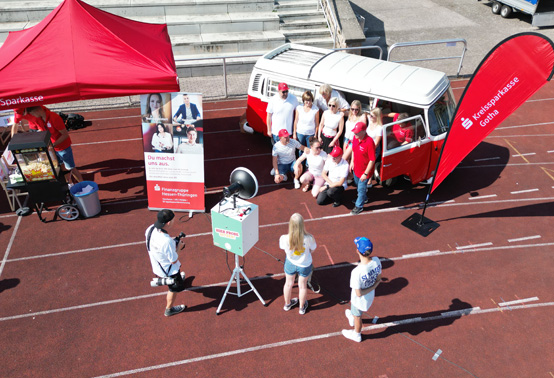
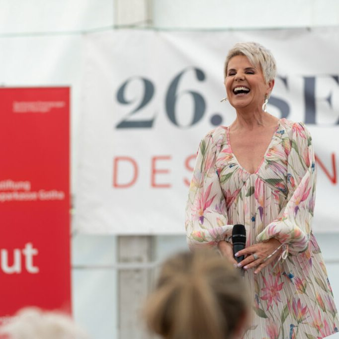

Wir drehen. Sie behalten die Regie.
Nicht jedes Projekt braucht Konzept und Schnitt aus einer Hand. Manchmal fehlt nur gutes Bildmaterial.
Beim Auftragsdreh übernehmen wir die Kameraarbeit für Ihr Projekt und halten uns an Ihre Vorgaben.
Sie erhalten strukturiertes, hochwertiges Rohmaterial, das Sie flexibel weiterverarbeiten können.

Was ist ein Auftragsdreh von x@motion?
Ein Auftragsdreh ist ein Drehtag nach Ihrem Plan: Event, Interview, Social Content oder ein anderes Vorhaben.
Sie sagen uns, was gebraucht wird. Wir sorgen für Kamera, Technik und saubere Umsetzung am Drehtag.
Ob Sie das Material selbst schneiden oder wir die Postproduktion übernehmen, entscheiden Sie.

Mehrwert für Ihr Projekt
Klare Vorgaben
Sie bestimmen, was gedreht wird. Wir setzen es nach Ihrem Briefing um.
Flexibles Material
Sie erhalten Rohmaterial, das Sie in Ihrem Workflow oder Ihrer Agentur weiterverarbeiten können.
Verlässlich am Drehtag
Abgestimmte Technik und pünktliche Umsetzung, damit am Set nichts dem Zufall überlassen bleibt.
Passende Technik
Je nach Projekt mit einer Kamera, im Mehrkamera-Setup, mit Gimbal oder Drohne.
Mit Netzwerk
Wenn ein Projekt mehr Hände braucht, bringen wir erfahrene Partner aus unserem Kreativnetzwerk mit.
Erweiterbar
Auf Wunsch ergänzen wir Schnitt, Farbkorrektur und Sounddesign.
Auftragsdrehs eignen sich besonders für:
Agenturen
& ProduktionsfirmenMarketing
& KommunikationVeranstalter
& EventteamsMedien
& RedaktionenWie läuft ein Auftragsdreh ab?
Ein Auftragsdreh ist schnell organisiert, wenn vorher klar ist, was am Ende gebraucht wird.
Briefing & Abstimmung
- Klärung von Ziel, Drehorten und Terminen
- Abstimmung von Motiven, Abläufen und Ansprechpartnern
- Festlegung von Technik und Umfang
Dreh vor Ort
- Zuverlässige Kameraarbeit nach Ihren Vorgaben
- Technik passend zu Ort, Licht und Aufgabe
- Rücksicht auf Abläufe, Gäste und Mitwirkende
Übergabe des Materials
- Sichtung und Sortierung des Materials
- Übergabe in vereinbarter Form
- Auf Wunsch Schnitt, Farbe und Ton
Warum Auftragsdrehs von x@motion?
- Erfahrung mit Events, Interviews und Social Content
- Ein fester Ansprechpartner
- Klare Absprachen statt Überraschungen
- Gefühl für Timing, Bild und Moment
- Professionelle Technik und saubere Umsetzung
- Schnitt und Postproduktion auf Wunsch aus einer Hand
Sie planen, wir drehen. Sauber, zuverlässig und ganz nach Ihren Vorgaben!
Die wichtigsten Fragen
Ja. Beim Auftragsdreh erhalten Sie das gedrehte Material zur eigenen Weiterverarbeitung. Wie und in welcher Form wir es übergeben, besprechen wir vorab.
Ja. Schnitt, Farbkorrektur und Sounddesign können wir im Anschluss übernehmen. Das lässt sich direkt mit dem Dreh zusammen anfragen oder später ergänzen.
Typisch sind Veranstaltungen, Interviews oder Social-Media-Content, bei denen Sie Planung und Schnitt selbst machen und nur gute Bilder brauchen.
Die Kosten hängen von Aufwand, Dauer, Ort und Technik ab. Nach einer kurzen Abstimmung erstellen wir ein transparentes Angebot.
Das hängt von Ihrem Termin und unserer Auslastung ab. Schreiben Sie uns einfach Ihr Datum, dann melden wir uns zeitnah mit einer Rückmeldung.
Starke Bilder für Ihr Projekt.
Was soll vor die Kamera, und wann?